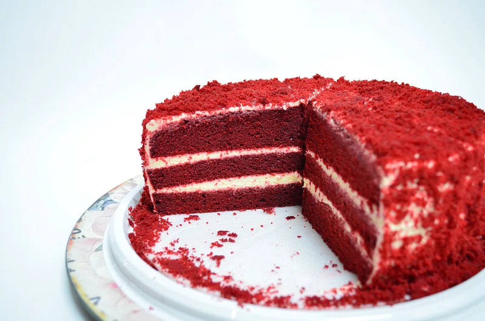

Red Velvet

Red Velvet Cake is a soft, moist cake with a mild cocoa flavor and a hint of tang from buttermilk. Its deep red color contrasts beautifully with smooth, creamy cream cheese frosting, making it as elegant as it is delicious.
Ingredients
- 2 ½ cups self-rising flour
- 1 ½ cups white sugar
- 1 cup vegetable oil
- 1 teaspoon baking soda
- 1 teaspoon distilled white vinegar
- 1 teaspoon vanilla extract
- 2 egga
- 1 cup buttermilk
- 2 ounces red food coloring
- 1 (8 ounce) package cream cheese, softened
- ½ cup butter, softened
- 4 cups confectioners' sugar
- 1 teaspoon vanilla extract
- ½ cup chopped pecans
Steps
- Preheat oven to 350 degrees F
- In a large bowl, mix together sugar, oil, and eggs. Add food coloring and vinegar to buttermilk. Add baking soda to flour. Add flour mixture and buttermilk mixtures alternately to the sugar mixture. Mix well. Stir 1 teaspoon vanilla into batter. Pour batter into prepared pans
- Bake for 20 minutes
- Mix together cream cheese, butter or margarine, confectioners' sugar, 1 teaspoon vanilla
- Frost cooled cake
- Serve
Home